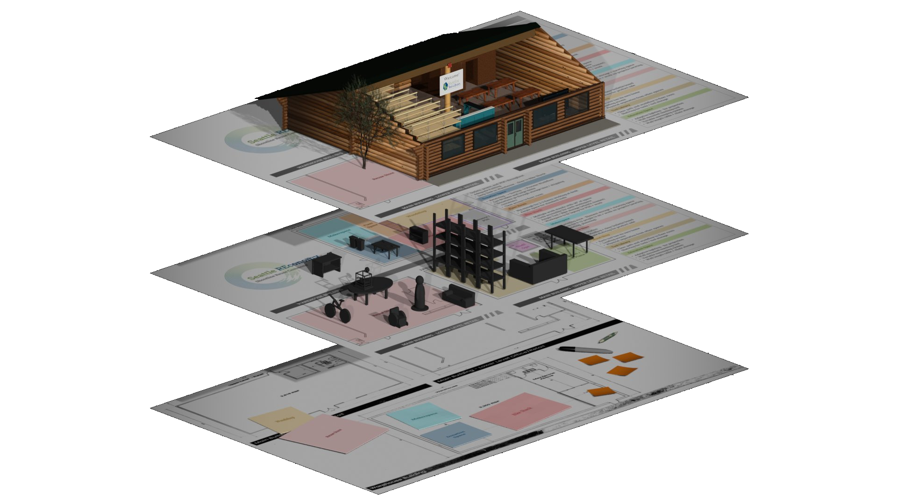
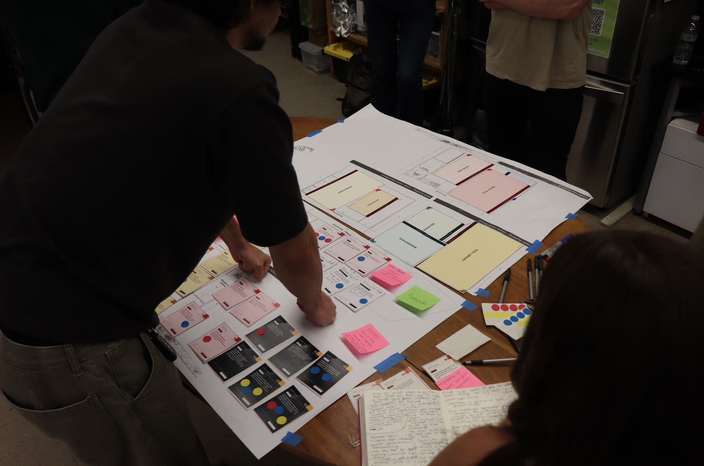
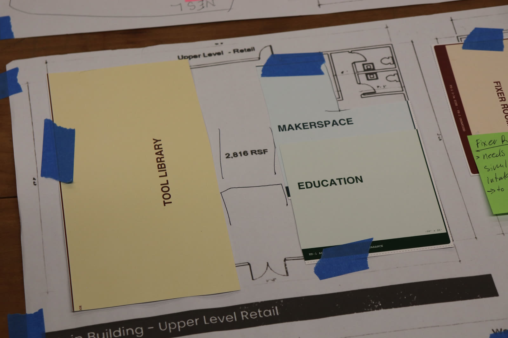
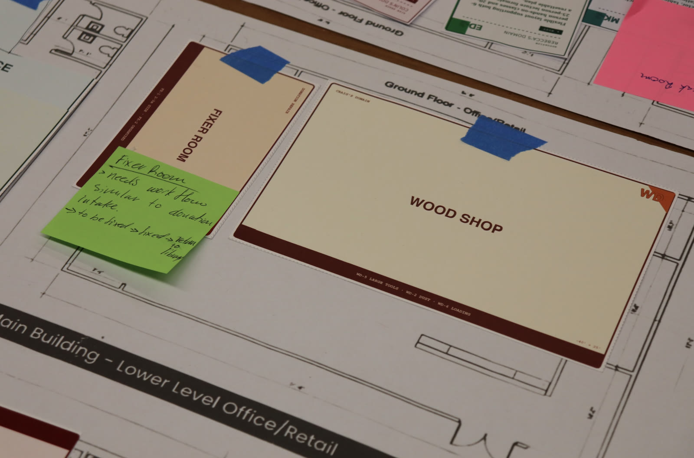
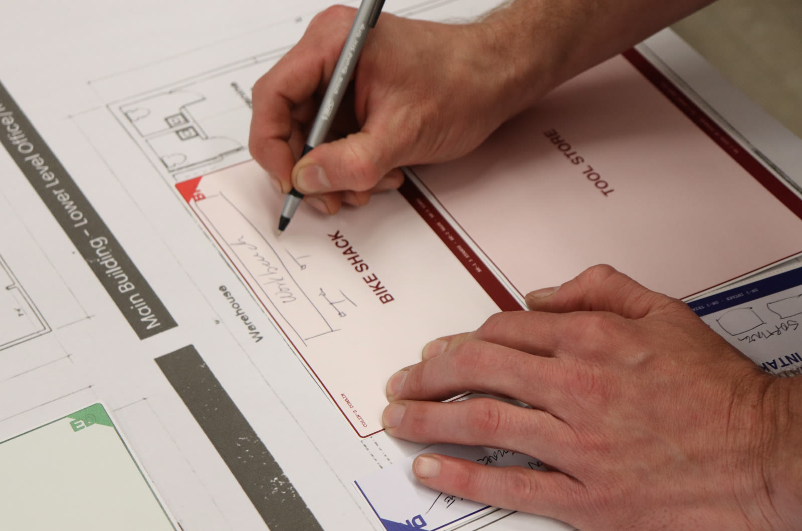
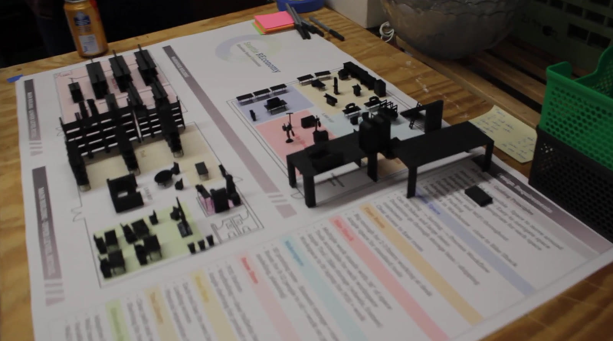
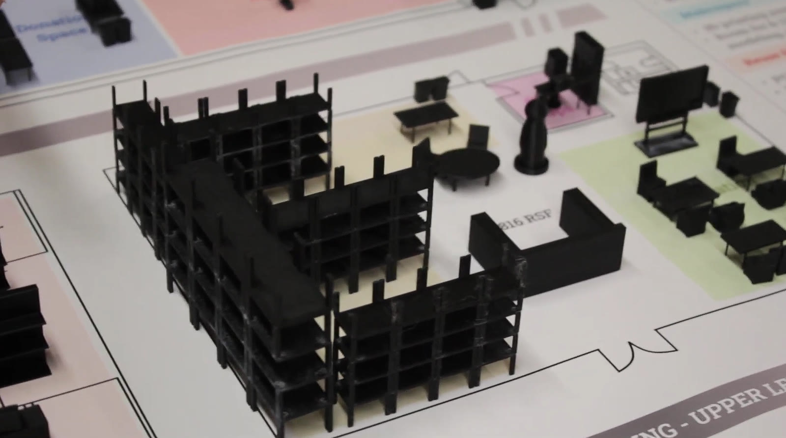
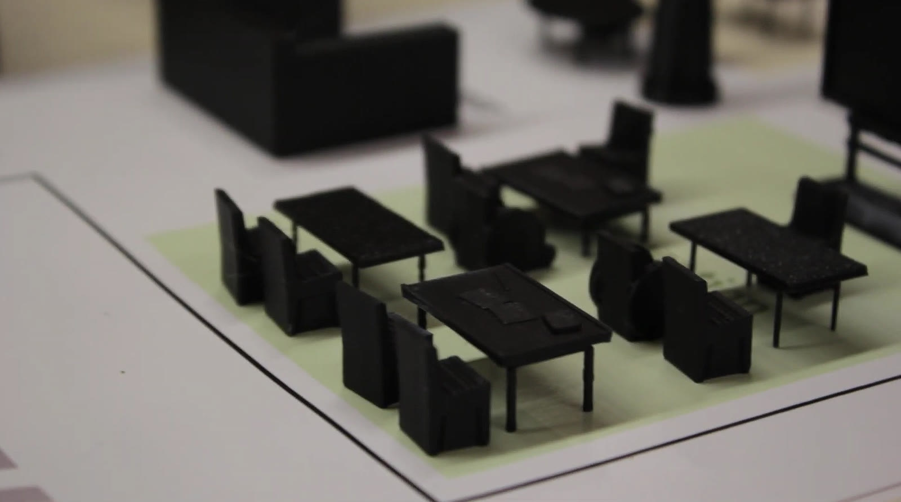
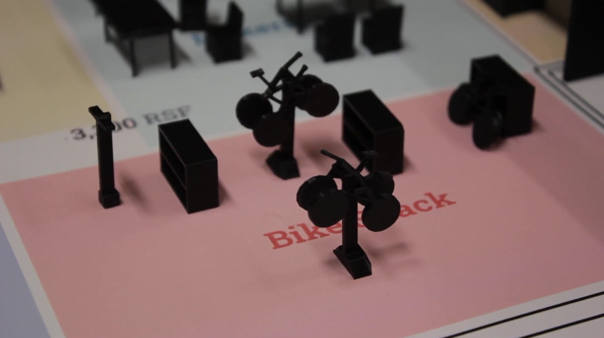

Capstone Team 19 / HCDE BS 2026
The Shape of Circularity
Designing a ReUse Commons for Seattle REconomy: a spatial design, research, and 3D visualization project that translates a 9,000+ RSF expansion into a shared resource hub for reuse, repair, education, and material redistribution.
Background
Seattle REconomy is a nonprofit focused on promoting a circular economy through reuse, repair, and sharing. With a city grant securing more than 9,000 square feet of new space, our goal was to design an optimal layout for a ReUse Commons: a multi-sector community resource hub beyond a tool library.
Design question
How might we design a shared, community-scale space that enables Seattle REconomy's programs, partners, and community members to collaborate effectively while supporting reuse, repair, and material redistribution?
Pain points
Seattle REconomy staff and volunteers are stretched by high demand, donations, and clutter. As outside stakeholders, we were uniquely positioned to help prioritize goals, navigate dependencies, and envision the Shoreline space as a true ReUse Commons that meets the needs of each sector.

Three designs, each building on the last / Exploded axonometric in Blender — furnished zones across the warehouse and main building, 9,000+ RSF over two buildings
The Commons had to hold eight distinct programs across two buildings without them competing for the same floor, door, or volunteer. Defining each zone's role — and what it needed from its neighbours — drove every layout decision that followed.
Reuse Store
Retail floor for donated goods, with front desk, point of sale, and deep storage behind.
Tool Library
The lending collection and member checkout — the existing program the Commons grows out from.
Donation Intake
Receiving and sorting, sited for van loading and a fleet of trolleys serving the whole space.
Fixer Room
Repair benches running intake's own workflow: to be fixed, fixed, returned to the library.
Education Space
A resettable room scaling from small hands-on classes up to lecture-format sessions.
Woodshop
Large tools with dust collection and its own loading access, kept clear of public flow.
Bike Shack
Repair stands, a wash bay, and zoned work areas in the warehouse building.
Makerspace
Shared equipment with classroom and orientation space for new members.
Each milestone fed the next: research set the requirements, stakeholders shaped them into zones, physical testing challenged those zones, and rendering turned the result into something the nonprofit could hand to a funder.
Research Synthesis
Develop design requirements based on stakeholder needs, workflows, challenges, and goals.
Low-Fidelity Layout
Actively involve stakeholders in shaping solutions, translating requirements into spatial zones.
Physical Usability Testing
Validate assumptions and gain real-time feedback on layout decisions through interactive testing.
Digital Rendering
Visualize the Commons in a digital 3D model, a useful artifact for grant access and future design.
Two workshops with Seattle REconomy staff and volunteers, working scaled program cards over printed floor plans. Participants moved zones, dot-voted priorities, and annotated the cards directly — surfacing adjacency and workflow needs that the interviews alone had not.




The layouts were then tested in physical form: 3D printed fixtures, shelving, and furniture placed at scale on the printed plan set. Handling the pieces let stakeholders judge aisle widths, sightlines, and circulation in a way flat drawings could not support.




The sponsor and community were the experts
As outside stakeholders, we recognized early that we were not the ones who knew this work — the staff, volunteers, and members did. So we designed an interactive research process rather than a consultative one: frequently testing assumptions with stakeholders, staying closely aligned with our sponsor, and spending time in the Shoreline Tool Library to understand the ecosystem firsthand.
That choice is why the co-design workshops and the 3D printed testing sessions exist at all. Handing people something they could move, annotate, and argue with produced sharper direction than any layout we could have proposed on our own.
Outcome
The final deliverables combine research, floor-plan strategy, physical testing, and cinematic 3D rendering. The resulting models give Seattle REconomy a clear artifact for grant access, partner communication, and future buildout planning as they move toward the new space.
Final Cinematic / Blender spatial visualization of the proposed ReUse Commons
Final Presentation / Capstone deliverable for Seattle REconomy
Where it goes from here
Seattle REconomy expects to gain access to the new space within months. Our research and layout models will guide the physical buildout and serve as a shared vision for communicating plans with partners, funders, and community stakeholders.
Because the three designs build on one another, the nonprofit can open with the first and grow into the others as funding and volunteer capacity allow — rather than needing the whole Commons in place on day one.